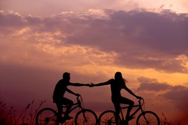
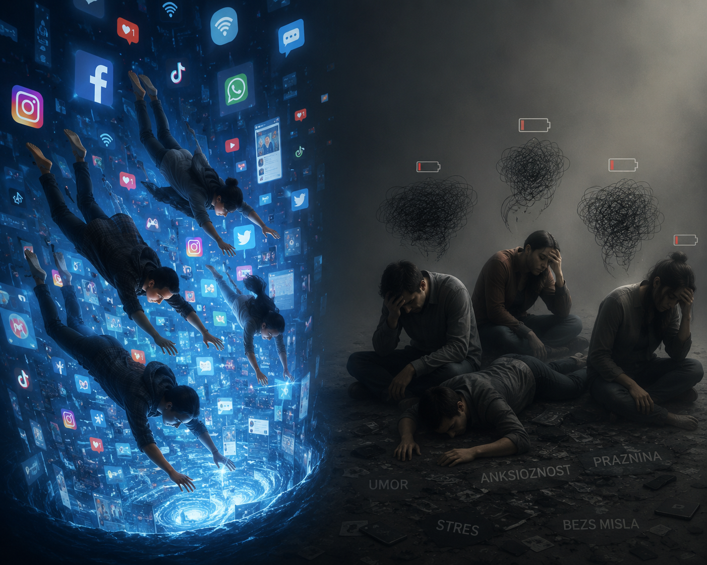
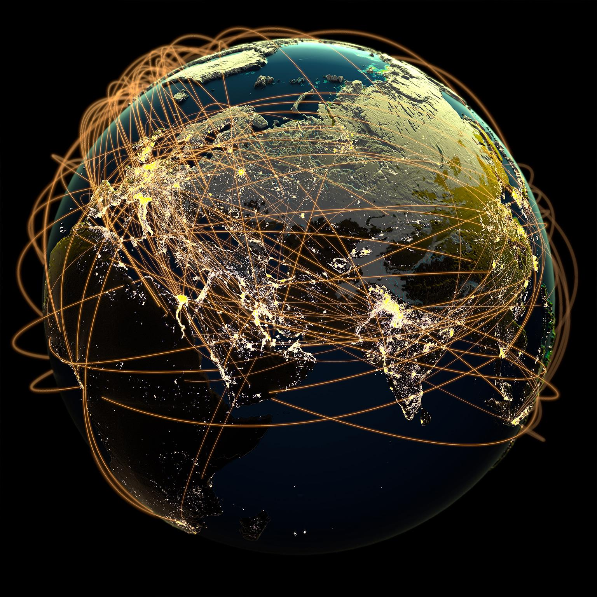
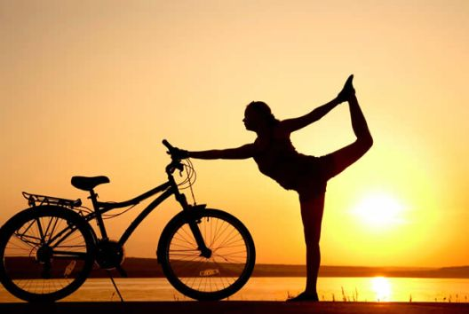

Никогаш не си САМ!
Дали само знаеш колку луѓе ширум светот поминуваат низ истиот стрес и притисок како и ти?

Исклучи се од дигиталниот свет.
Добредојде во твојот личен простор без нотификации, социјални мрежи и врева.
Оваа страница е создадена за да те потсети како е да уживаш во сопственото присуство. Одвој неколку минути за себе, провери го твоето ниво на стрес преку квизот или инспирирај се за твојата следна офлајн активност.

Колку ти е стресен денот?
Одговори на овие 5 брзи прашања за да го провериш твоето моментално ниво на оптоварување.
1. Колку пати денес фати да скролаш на социјалните мрежи без посебна причина?
2. Како го чувствуваш твоето тело во моментов?
3. Дали денес најде барем 15 минути во кои беше сам со твоите мисли без никаков екран?
4. Дали често се чувствуваш како да не ги исполнуваш сопствените очекувања и како да заостануваш зад другите?
5. Дали чувствуваш дека светот околу тебе те притиска со пребрзо темпо?
Дигиталниот свет и притисокот врз младите!
Живееме во дигитален свет, многу поразличен од оној кој бил порано. Ако си тинејџер или пак си во почетокот на својата зрелост, можеби ќе се согласиш со фактот дека понекогаш родителите не го разбираат светот и не согледуваат како понекогаш може да биде тешко да се социјализираш и да се соочиш со притисокот од твоите врсници.
Тие често не забележуваат дека денес бучавата не прекинува кога ќе го затвориш куферот или кога ќе си дојдеш дома; таа продолжува на нашите екрани, 24/7, преку секое ново известување и секој „совршен“ туѓ живот што го гледаме онлајн. Се наоѓаме во еден чуден, тивок меѓупростор каде што сме поврзани со илјадници дигитални профили, а сепак, длабоко во себе, останува она чувство на осаменост и преоптовареност од преголемите очекувања.

Начини како да го подобриш менталното здравје
Идеи кои ќе ти помогнат да се отргнеш од дигиталниот свет.
📖 Читање книга
Запознавање со еден сосема нов свет кој е уредно опишан на чист лист хартија. Нурнувањето во фантазиите го тренира твојот мозок да одржи длабок фокус. Кога читаш, ти си режисер на сопствениот филм во главата.
🏃 Физичка активност
Понекогаш сè што ти е потребно е едноставно да се придвижиш. Без разлика дали е тоа брзо трчање, интензивен тренинг во теретана, возење точак или само бавна прошетка. Движењето го согорува вишокот кортизол.

🎯 Офлајн предизвик на денот
Мали чекори кои прават голема разлика за твојот мир.
✍️ Водење личен дневник
Испишување на твоите емоции на хартија или во овој тивок простор.